2026-11-02T19:15:38.348Z · ltx-2.5, no references, one prose prompt from a story and the guide · 384 credits · 3 LLM calls (gpt-6.1-sol) · docs: V3/docs/02-case-1-text-only.md
Brief. A 16-second widescreen ad for Petal & Stem, a small neighbourhood flower shop: the florist opens the shop at dawn and arranges a bouquet, then hands it to a smiling customer at the door; warm, natural light; end on the shop front.
| V3 | MCP | |
|---|---|---|
| the reference | none | nothing attached |
| the still (seed / first frame) | none (text only) | no still: it went straight to video |
| the video call | chosen in code: text-to-video on ltx-2.5 480p, 16 s, audio off, no references. ltx-2.5 is fixed for the free tier in V3; the story decided audio. | chosen by the chat model: create_video_from_text on ltx-2.5 480p, 16 s, audio off, no references. It gave no reason for the model; its reply was the download link only. |
| credits · time | 384 · 39 s of generation | 384 · 68 s end to end |
FORMATCreate a 16-second cinematic advertisement for Petal & Stem, a small neighbourhood flower shop. LOOKWidescreen 16:9. CONTINUITYPhotorealistic, intimate, warm natural dawn sunlight, soft golden highlights, authentic lived-in neighbourhood, inviting artisanal atmosphere. LOOKFour coherent shots with natural edits, same florist, shop and bouquet throughout. BEAT 10–4 seconds: exterior medium-wide shot at dawn, an adult florist wearing a sage-green apron unlocks and opens the wood-and-glass shop door, warm sunlight illuminating flower buckets beside the entrance. BEAT 24–9 seconds: interior close-ups of the florist's hands gently arranging a beautiful bouquet of blush pink roses, cream flowers and fresh greenery, wrapping it in brown kraft paper; delicate textures, shallow depth of field, slow smooth camera movement. BEAT 39–12 seconds: medium shot at the open doorway, the florist hands the finished bouquet to a smiling adult customer, a friendly genuine neighbourhood exchange, natural hands and anatomically correct movement. BEAT 412–16 seconds: cut to a welcoming straight-on exterior establishing shot of the same charming flower shop, slowly ease backward to reveal the entire storefront with flowers framing its door; clear tasteful shop sign reads exactly 'Petal & Stem'. HOLDHold on the storefront for the final two seconds. GRADEGentle cinematic colour grade, realistic flowers, calm uplifting pacing. NEGATIVESNo voiceover, no subtitles, no other text overlays.
| V3 case 1 score | 80 / 100 · An attractive, warmly lit ad with a clear bouquet handoff and correctly branded closing storefront, weakened by an already-finished bouquet before arranging, continuity shifts, and inconsistent earlier signage. |
| MCP score (this judging) | 87 / 100 · A warm, visually polished ad follows the requested story and ends on the correctly branded shop front, but dawn is only suggested and the opening sign misspells the brand. |
| Pairwise | mcp wins, clear (mcp was shown first) · The first video more clearly shows the required opening–arranging–handover sequence, with consistent characters, a coherent pink-and-white bouquet, warm natural light, and a clean shop-front ending. Both finish with the correct “Petal & Stem” sign but have earlier signage errors; the second additionally shows the florist already holding a finished bouquet while opening, weakening the required progression. |
| Earlier, same judge | keyref-1 70 · keyref2 44 · MCP 87–88 (the flower brief) |
| must-have | V3 | MCP |
|---|---|---|
| The florist opens the shop at dawn, arranges a bouquet, and hands it to a smiling customer at the door, in that order. | partly The door opens in early golden light, arranging follows, and a smiling customer receives the bouquet at the doorway; however, the florist already carries a wrapped bouquet while opening. | partly Opening the door, arranging the bouquet and handing it to a smiling customer appear in order; the golden light suggests early morning but does not clearly establish dawn. |
| The florist, the customer and the bouquet stay the same throughout; no extra or floating bouquets. | partly The people remain broadly consistent and there is no clearly floating or duplicated handoff bouquet, but the bouquet's size and flower arrangement shift between shots. | yes The florist and customer appear consistent, and the pink-and-white bouquet retains its brown wrapping; no unexplained duplicate or floating bouquet is visible. |
| Warm, natural light. | yes Golden exterior light and soft window illumination consistently provide the requested warm, natural appearance. | yes Warm sunlight illuminates the storefront, people and flowers consistently. |
| It ends on the shop front, with the name reading exactly "Petal & Stem" if a sign is shown. | yes The final frame clearly shows the storefront with the exact name "Petal & Stem"; earlier signage omits the ampersand or has malformed lettering. | yes The final frame shows the shop front with the exact text "Petal & Stem", although the opening sign incorrectly reads "Peal & Sten". |
| About 16 seconds, widescreen 16:9. | yes The supplied sampling spans the stated 16-second ad, and the frames are widescreen 16:9. | yes The supplied timestamps span the stated 16-second ad, and all frames are widescreen 16:9. |
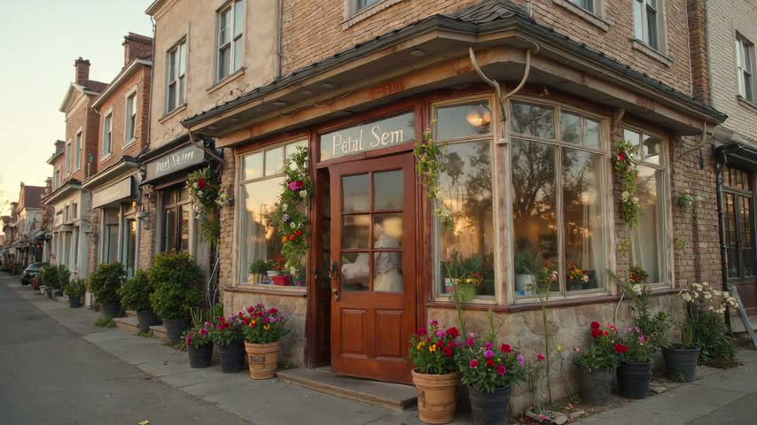
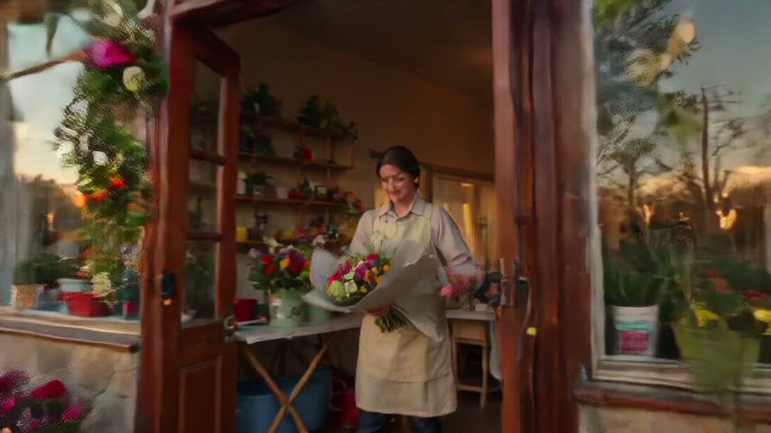
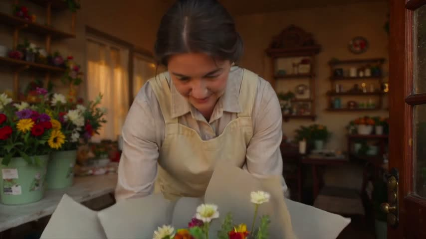
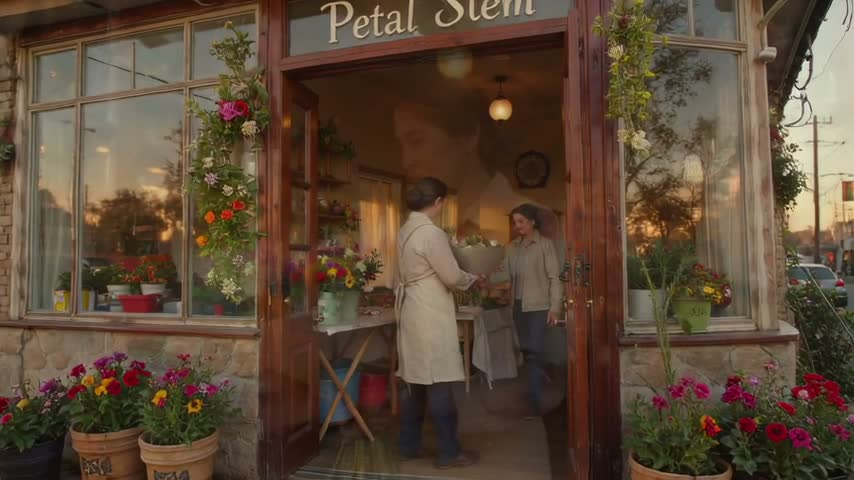
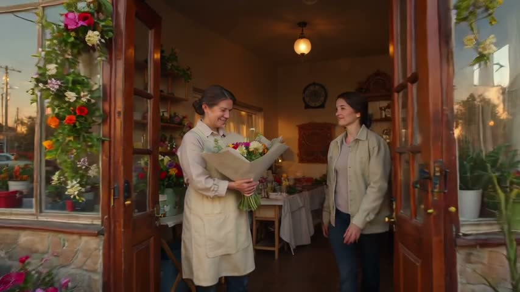
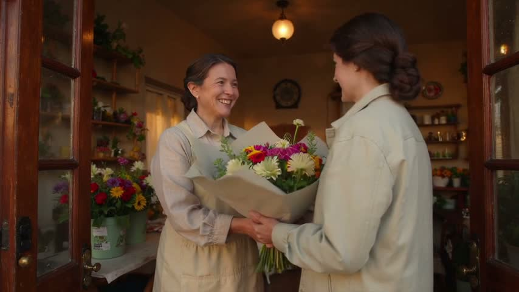
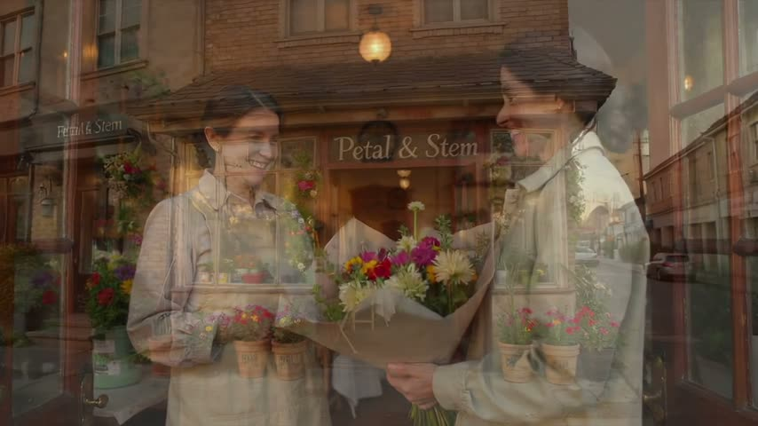
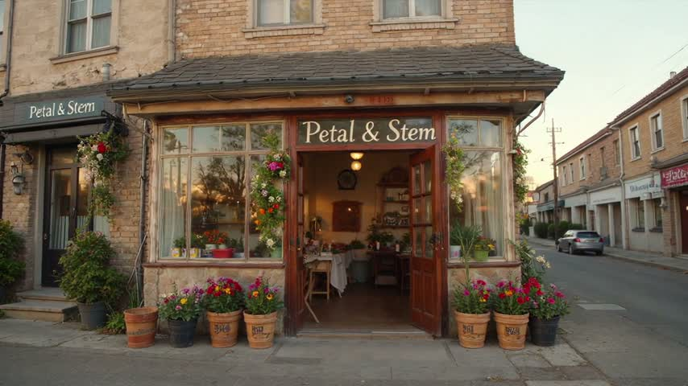
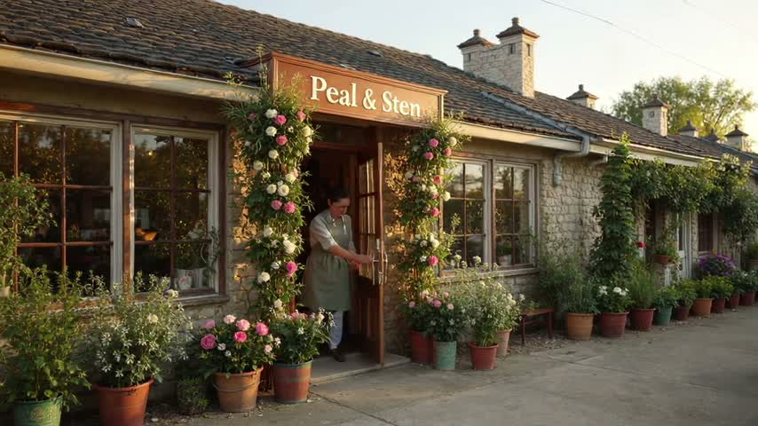
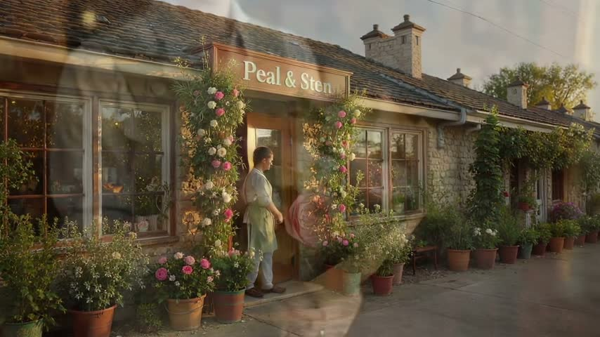
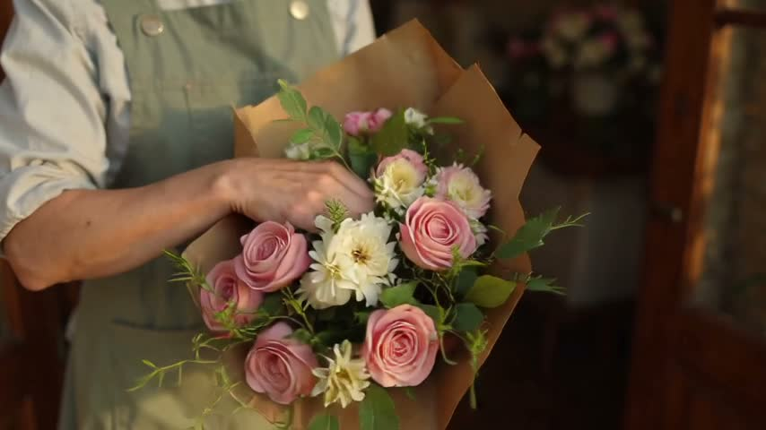
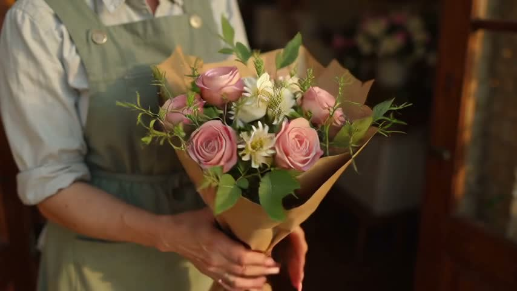
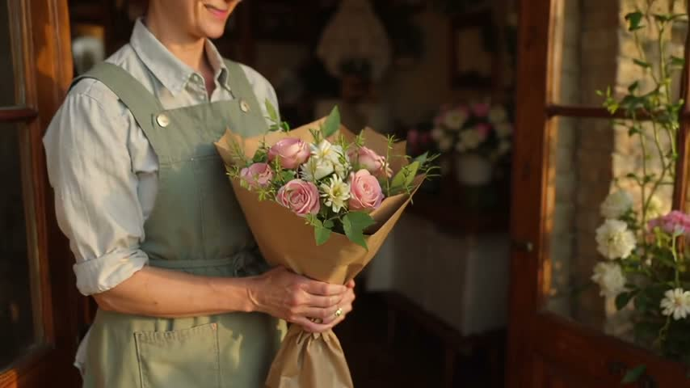
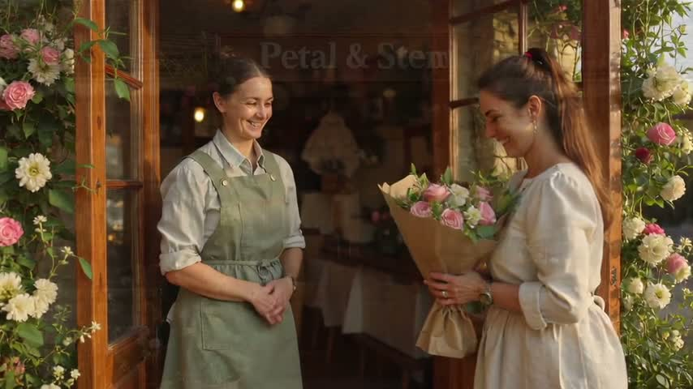
At dawn, a florist wearing a simple linen apron opens Petal & Stem, a small neighbourhood flower shop. The street is still quiet, and warm, natural light touches the doorway as the florist welcomes the new day. Inside, fresh flowers stand in buckets beside a modest worktable. The florist gathers a handful of stems, settles a pale blossom among brighter flowers, and folds paper around the bouquet with practiced care. The arrangement feels personal and freshly made, an everyday gift prepared by someone who knows their craft. A customer in a light jacket arrives at the open door. The florist offers the finished bouquet, and the customer accepts it with a broad, genuine smile. Their brief exchange gives the morning a friendly, neighbourly warmth. The moment ends on the shop front, its Petal & Stem sign readable above the welcoming entrance, with flowers gathered around the doorway in the soft dawn light.
| kind | fiction · research not needed: The shop is treated as a fictional setting; no real location, likeness, or externally verifiable details are required. |
| people | Florist wearing a simple linen apron; Smiling customer wearing a light jacket |
| place · time · mood | Petal & Stem, a small neighbourhood flower shop · Dawn · Warm, welcoming, intimate, and neighbourly |
| exact words | Petal & Stem |
| seconds · aspect · sound | 16 s (The request specifies a 16-second ad.) · 16:9 · none (No sound or speech was requested.) |
| progression |
|
| specific · first frame | none · none |
{
"needs_research": false,
"aspect": "16:9",
"kind": "fiction",
"place": "Petal & Stem, a small neighbourhood flower shop",
"sound": "none",
"prose": "At dawn, a florist wearing a simple linen apron opens Petal & Stem, a small neighbourhood flower shop. The street is still quiet, and warm, natural light touches the doorway as the florist welcomes the new day. Inside, fresh flowers stand in buckets beside a modest worktable. The florist gathers a handful of stems, settles a pale blossom among brighter flowers, and folds paper around the bouquet with practiced care. The arrangement feels personal and freshly made, an everyday gift prepared by someone who knows their craft. A customer in a light jacket arrives at the open door. The florist offers the finished bouquet, and the customer accepts it with a broad, genuine smile. Their brief exchange gives the morning a friendly, neighbourly warmth. The moment ends on the shop front, its Petal & Stem sign readable above the welcoming entrance, with flowers gathered around the doorway in the soft dawn light.",
"people": [
"Florist wearing a simple linen apron",
"Smiling customer wearing a light jacket"
],
"first_frame": "",
"seconds_why": "The request specifies a 16-second ad.",
"time": "Dawn",
"seconds": 16,
"research_why": "The shop is treated as a fictional setting; no real location, likeness, or externally verifiable details are required.",
"exact_words": [
"Petal & Stem"
],
"mood": "Warm, welcoming, intimate, and neighbourly",
"specific": [],
"progression": [
"At dawn, the florist opens the small flower shop in warm, natural light.",
"Inside, the florist gathers flowers and finishes a paper-wrapped bouquet.",
"A customer arrives at the open doorway.",
"The florist hands over the bouquet, and the customer smiles.",
"The ad ends on the welcoming shop front with the Petal & Stem sign readable."
],
"sound_why": "No sound or speech was requested."
}1677 characters (limit 2,000) · 5 beats · 5 shots · code check: length yes exact words yes
FORMATCreate a 16-second cinematic advertisement for a small neighbourhood flower shop, widescreen 16:9. LOOKPhotorealistic, intimate and neighbourly, with warm natural dawn light, soft golden highlights and realistic lived-in textures. CONTINUITYFive coherent shots with natural edits, the same linen-aproned florist and shop throughout, and the same bouquet from its first appearance onward. BEAT 10–3 seconds: exterior medium shot, the florist wearing a simple linen apron opens the wood-and-glass shop door, warm dawn light across the quiet threshold, gentle camera push toward the entrance. BEAT 23–6 seconds: interior close-up, the linen-aproned florist folds paper around an already assembled bouquet of bright flowers with one pale blossom, fresh flower buckets beside the modest worktable, stationary camera with shallow depth of field. BEAT 36–9 seconds: doorway medium-wide shot, a customer wearing a light jacket arrives at the open entrance, the florist standing inside with the finished paper-wrapped bouquet, stationary camera at eye level. BEAT 49–12 seconds: medium two-shot, the linen-aproned florist hands the bouquet to the customer with a broad genuine smile, warm light across the wooden threshold, stationary camera; the customer now holds the bouquet, the florist's hands are empty. BEAT 512–16 seconds: separate exterior establishing wide shot, the welcoming shop front stands still with flower buckets around its entrance and a clear tasteful sign reading exactly 'Petal & Stem', the quiet street softly lit by dawn, locked-off camera. HOLDHold on the still, readable storefront for the final two seconds. GRADEGentle cinematic colour grade, calm uplifting pacing. NEGATIVESNo subtitles, no text overlays, no voiceover.
| # | range | shows |
|---|---|---|
| 1 | 0–3 s | Linen-aproned florist opens the shop door in warm dawn light. |
| 2 | 3–6 s | Florist folds paper around a bright bouquet with one pale blossom. |
| 3 | 6–9 s | Light-jacketed customer arrives at the open doorway. |
| 4 | 9–12 s | Florist transfers bouquet to smiling customer; florist's hands end empty. |
| 5 | 12–16 s | Still storefront with readable shop sign and flowers around entrance. |
FORMATCreate a 16-second cinematic advertisement for Petal & Stem, a small neighbourhood flower shop. LOOKWidescreen 16:9. CONTINUITYPhotorealistic, intimate, warm natural dawn sunlight, soft golden highlights, authentic lived-in neighbourhood, inviting artisanal atmosphere. LOOKFour coherent shots with natural edits, same florist, shop and bouquet throughout. BEAT 10–4 seconds: exterior medium-wide shot at dawn, an adult florist wearing a sage-green apron unlocks and opens the wood-and-glass shop door, warm sunlight illuminating flower buckets beside the entrance. BEAT 24–9 seconds: interior close-ups of the florist's hands gently arranging a beautiful bouquet of blush pink roses, cream flowers and fresh greenery, wrapping it in brown kraft paper; delicate textures, shallow depth of field, slow smooth camera movement. BEAT 39–12 seconds: medium shot at the open doorway, the florist hands the finished bouquet to a smiling adult customer, a friendly genuine neighbourhood exchange, natural hands and anatomically correct movement. BEAT 412–16 seconds: cut to a welcoming straight-on exterior establishing shot of the same charming flower shop, slowly ease backward to reveal the entire storefront with flowers framing its door; clear tasteful shop sign reads exactly 'Petal & Stem'. HOLDHold on the storefront for the final two seconds. GRADEGentle cinematic colour grade, realistic flowers, calm uplifting pacing. NEGATIVESNo voiceover, no subtitles, no other text overlays.
# The operational prompt (text-to-video)
The Magic Hour guide says: specify the subject, one action, camera move, framing and mood; request only audio and
duration the model supports; then review the actual result. The prompt that works is ONE prose paragraph, under 2,000
characters, in this order:
1. FORMAT: the duration, the kind of piece, the subject, the aspect, in one sentence.
"Create a 16-second cinematic advertisement for Petal & Stem, a small neighbourhood flower shop. Widescreen 16:9."
2. LOOK: medium, light, mood, the texture of the world, in one sentence. For action, the look line also carries the
ENERGY in plain words ("tight, fast-paced editing, roaring engines, cars accelerating hard, streetlights streaking
past"): the model renders the pace it is told, and a race described calmly comes out slow.
"Photorealistic, intimate, warm natural dawn sunlight, soft golden highlights, authentic lived-in neighbourhood."
3. CONTINUITY: how many shots, and what stays the same across them, in one sentence.
"Four coherent shots with natural edits, same florist, shop and bouquet throughout."
4. BEATS: timed ranges that together cover the whole duration, in order. Each beat, in this order: the time range,
the framing, the subject with one identifying detail, ONE action, one environment detail, the camera or lens.
"0–4 seconds: exterior medium-wide shot at dawn, an adult florist in a sage-green apron unlocks and opens the
wood-and-glass shop door, warm sunlight on the flower buckets beside the entrance."
One action per beat. Never two things happening. Never a thing that must appear later mentioned early.
The request's own verbs are the beats' actions and each gets its own beat: "arranges a bouquet" is a beat of hands
placing stems, and wrapping is a different action; do not merge two of the request's actions into one beat.
When possession changes, the beat ends with the new state stated plainly: "the customer now holds the bouquet, the
florist's hands are empty".
The last beat is a separate establishing shot with no new action: the place alone, or the people standing still.
Every beat has a camera MOVE (push, slow orbit, lateral slide, ease back, handheld follow), never "stationary" or
"locked-off" except the final hold. Name the key object concretely once (blush pink roses, cream flowers, brown
kraft paper), not "a bouquet"; the model renders nouns it is given.
A beat is 3–6 seconds, so a 16-second clip has 3–5 beats and a 30-second clip 5–8. Two-second beats make a
cut every two seconds, which the model renders as a jumble; the shot count in CONTINUITY equals the beat count.
5. EXACT WORDS: any lettering the video must show, quoted once, inside the beat where it is seen.
"clear tasteful shop sign reads exactly 'Petal & Stem'."
6. SOUND (only when audio is on): ambient, or the character of music, or the spoken lines quoted with their time
range and who speaks. Narration and dialogue are the expensive part of the budget; keep them short.
7. HOLD: the last beat ends on a still, readable image. "Hold on the storefront for the final two seconds."
8. GRADE: colour treatment and pacing, one short sentence. "Gentle cinematic colour grade, calm uplifting pacing."
9. NEGATIVES: one line, last, only what the model would otherwise add. "No voiceover, no subtitles, no text overlays."
Quality words are descriptive, never technical: cinematic, photorealistic, shallow depth of field, natural hands and
anatomically correct movement, realistic textures. No resolution words, no "8k", no seeds, no camera brands.
Never: shot-list headings, a separate negatives block, a constraint on every sentence, "do not show X" for things that
appear later, repeating a sentence, a sign mentioned in a beat where it must not be seen.
Budget: about 450 characters go to format, look, continuity, hold, grade and negatives. The rest is beats, about 200
characters each. Compress the story into the beats; do not paste it.
# Image-to-video (a start frame is supplied)
Same slots, same order, two changes:
- FORMAT shrinks to the duration and "matching the source image" (the aspect is the image's).
- LOOK becomes PRESERVE: name what the image already fixes and must stay: "Preserve the woman's face, dark hair in a
low bun and cream jacket, and the bouquet of yellow, magenta, cream and red flowers in pale paper, exactly as in the
image; keep the morning light and the doorway."
- The first beat describes the image as it is and the first motion out of it, so the model continues the picture
instead of cutting away. Later beats may cut, with the continuity sentence naming the same people and the bouquet by
the same words every time.
# When people carry the scene (a handoff, a conversation, a reunion)
The MCP's scene 2 clip read as more alive than ours with the same still route. The differences were in the prompt:
- ONE continuous shot with a very slow push in, not five cuts in 16 seconds. On image-to-video every cut abandons the
start frame; one shot keeps the faces and lets a performance develop.
- Performance verbs and eye lines in every beat: "exchanging warm eye contact", "he smiles warmly and reaches out with
both hands", "they exchange affectionate smiles", "she steps close beside him". Behaviour, not inventory.
- A physically ordered action: "only after he has a firm grip does she release it".
- PRESERVE is three anchors per person (hair, one garment, one detail) and one line for the object, said once. The
identity is in the start frame; a 600-character inventory repeated in every beat buys nothing and starves the beats.
- End on the faces: "a stable medium two-shot showing both faces and the bouquet, hold three seconds", not a wide
establishing shot of people standing still.
- Framing: the seed still should be a medium shot where faces are large enough to act; a medium-wide doorway reads
as staging.
| call | text-to-video · model ltx-2.5 · 16 s · 16:9 · 480p · audio off · references none |
| credits · time | 384 credits · 39 s wall · rendered 16 s |
| prompt sent | the operational prompt above, unchanged |
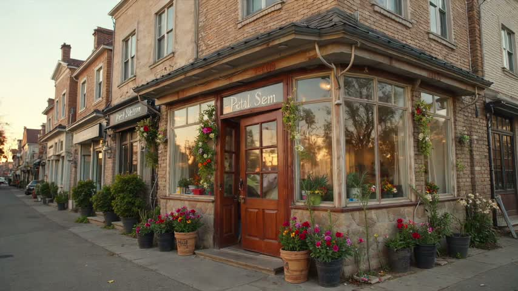
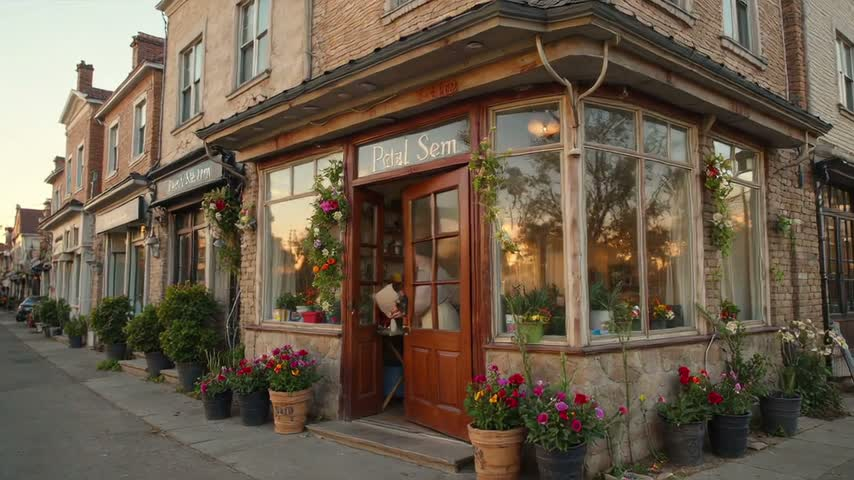
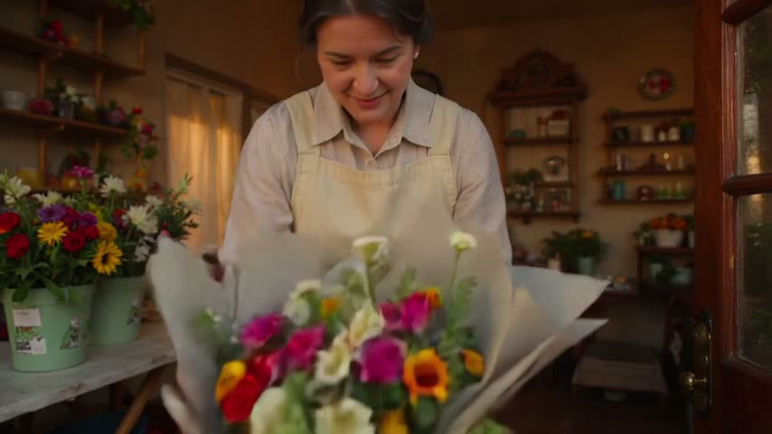
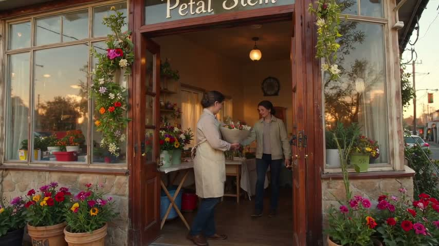
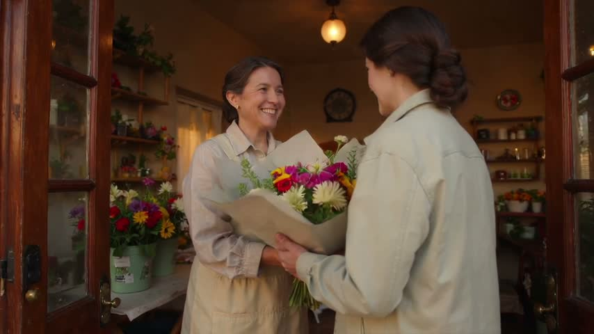
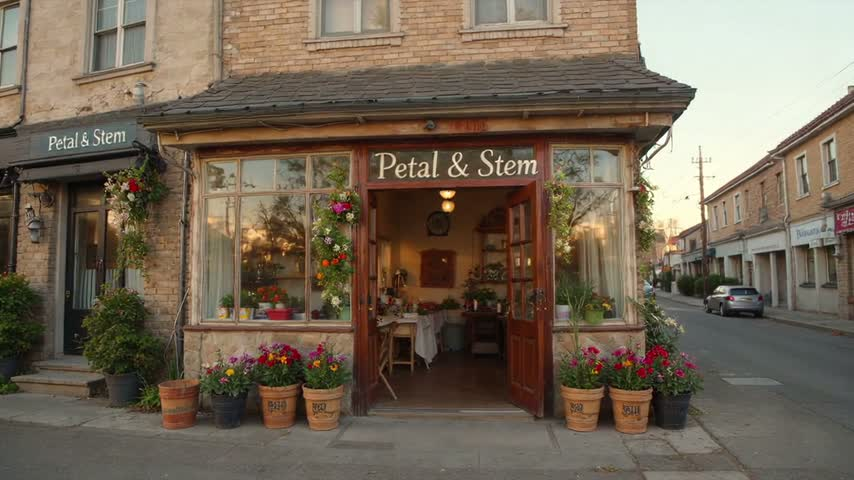
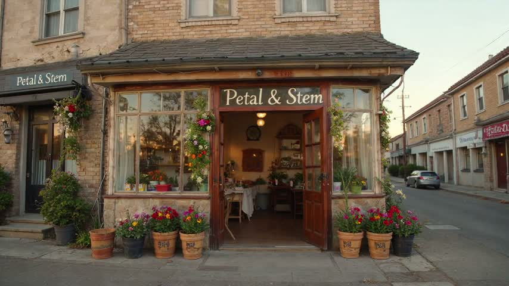
| beat | subject present | action seen | evidence |
|---|---|---|---|
| 1 | yes | yes | Aproned florist is partly visible behind the opening door; warm light fills the windows. Door was closed in the first frame. |
| 2 | yes | unclear | Florist holds paper around a bright bouquet with pale blossoms; hands and the actual folding are obscured. |
| 3 | yes | unclear | Light-jacketed customer stands inside the open doorway facing the florist; arrival itself is not established. |
| 4 | yes | unclear | Both people hold the bouquet during the handoff. The customer smiles, but the florist's hands are not yet empty. |
| 5 | yes | unclear | Storefront, readable sign, and entrance flowers are visible. Slight framing differences between this and the last frame prevent confirming a still hold. |
| exact words | 'Petal & Stem' reads “Frames 6–7: P e t a l [space] & [space] S t e m.” yes |
| same people and place | yes |
| last frame holds | unclear |
| artifacts | The early doorway sign has malformed lettering and an absent or illegible ampersand; it resolves to clear 'Petal & Stem' in the final views. |
| failures | none |
clip-1.mp4 · review PASS · state record: Florist wearing a simple linen apron; Smiling customer wearing a light jacket at Petal & Stem, a small neighbourhood flower shop, Dawn; words seen: 'Petal & Stem' → “Frames 6–7: P e t a l [space] & [space] S t e m.”; last frame frames/clip-1-last.jpg[
{
"clip": "clip-1.mp4",
"seconds": 16,
"people": [
"Florist wearing a simple linen apron",
"Smiling customer wearing a light jacket"
],
"place": "Petal & Stem, a small neighbourhood flower shop",
"time": "Dawn",
"mood": "Warm, welcoming, intimate, and neighbourly",
"words_seen": [
{
"text": "Petal & Stem",
"exact": true,
"reads": "Frames 6–7: P e t a l [space] & [space] S t e m."
}
],
"last_frame": "frames/clip-1-last.jpg"
}
]| # | kind | what | credits |
|---|---|---|---|
| 1 | LLM | v3-story-v1 · the story record from the request | 0 |
| 2 | LLM | v3-prompt-v1 · the operational prompt from the sequence and the guide | 0 |
| 3 | LLM | v3-review-v1 · review of clip-1 on 7 frames | 0 |
| 4 | text-to-video | /v1/text-to-video · ltx-2.5 16 s 480p audio off · 39 s | 384 |
| 5 | ffmpeg | frames of clip-1: first, each beat's middle, last | 0 |
| total | 384 |
LLM usage: 2 calls, 6780 in / 1699 out tokens · the MCP's run for this brief: 4 calls, 384 credits, 68 s end to end, no machine review.